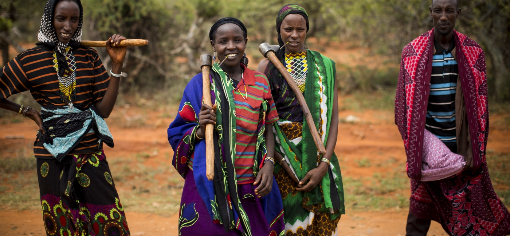
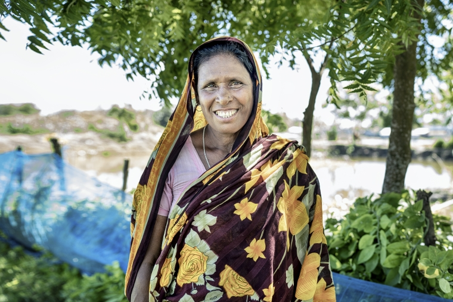
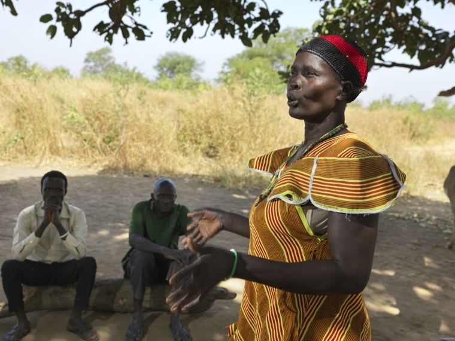
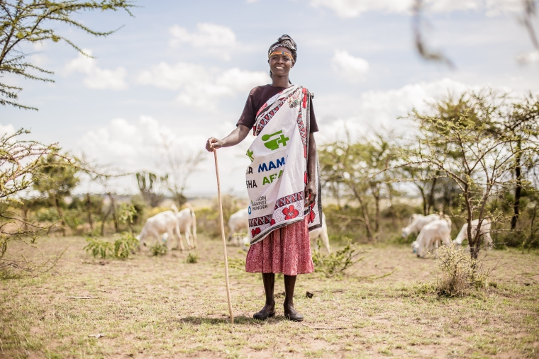
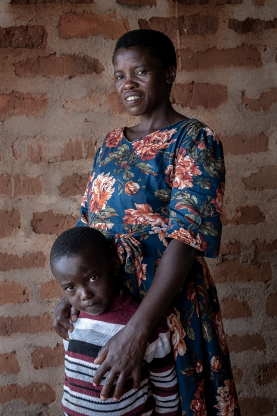

posted by Gary Bachor on March 08, 2022
On International Women’s Day, we celebrate women’s achievements and progress toward gender equality—and we shine a light on the immense challenges and injustices that women and girls continue to face around the world.
Women and girls are disproportionately affected by hunger: in too many households, they eat last and least. The top drivers of hunger – conflict, climate change, and inequity – also hit women hardest.
In nearly two-thirds of the world’s countries, women are more likely than men to suffer from hunger and food insecurity.
80% of people who are displaced by climate change are women.
In many low-income countries, women farmers make up more than half of the agricultural labor force. Giving women farmers more resources could decrease the number of hungry people in the world by 100-150 million people.
At the same time, women are our most powerful allies in the fight against hunger. Women who participate in household decisions produce and earn more - women also reinvest as much as 90% of their income back into their families, helping to improve health, nutrition, and more.
In their homes, mothers and grandmothers are often the first people to spot signs of malnutrition and to take action. In communities around the world, women are also leading efforts to build household latrines, manage community water points, plant climate-resilient crops, and start new businesses. In health outposts and treatment centers, female doctors, scientists, nurses, community health workers are revolutionizing the ways we prevent and treat malnutrition.
There are countless examples of women creating better lives for themselves, their children, and their communities, despite the inequities and challenges they face. Below are stories of just a few of these inspiring women changemakers.
SABUDA, BANGLADESH

Climate change has exacerbated flooding in Sabuda’s riverside village in Bangladesh, making life very difficult for her and women like her. Until recently, Sabuda and her husband struggled to feed their children and support their grandchildren on the little money they earned as day laborers.
With support from Action Against Hunger and our partners, Sabuda and her husband developed new skills and started a fish farm, a profitable vegetable garden at home, and began to raise livestock. The water and soil in their area has high salinity levels as a result of extreme and frequent flooding, so the family learned to plant and sell crops and raise fish that can flourish in these difficult environments.
“We are now self-sufficient. It feels good to get fresh vegetables, and now we do not have to depend on others. [And] by selling fish, we saved enough to buy cattle. I have chicken and a cow,” says Sabuda. Before, when her daughters would come home to visit, Sabuba could not afford to treat them well.
“Our lives have transformed so much. Now, every time my daughters visit us with my grandchildren, I serve fish from our pond and cook vegetables. My grandson Mahfuz is six years old, he is going to school now, and we can provide for his education.”
NYANUT, SOUTH SUDAN

When clean water is hard to find, too often, it’s the woman’s duty to travel long and sometimes dangerous journeys to fetch it. Nyalat, a mother in South Sudan, used to walk for seven hours a day to get water to meet her family’s needs.
Two years ago, Feed Someone Today drilled a borehole in Nyalat’s village, and Nyalat joined the community’s water management committee to ensure that the water well’s benefits are felt for years to come. She was later elected to lead the committee as chairperson and treasurer.
"I keep the money collected from the community for the maintenance of the borehole. People trust me, I'm always hardworking,” she says. "My work is to mobilize people.”
The committee chair role would have typically been held by a man, but Nyanut is inspiring the next generation to think differently about gender roles. Some girls in the village say that they would like to be the committee chairperson one day - a future Nyanut hopes to see.
"People see me with a lot of respect, when I call for a meeting they come on time and listen,” says Nyanut. “The people are happy with my work and I hope that when the girls grow up and marry, they will hold this position on the committee."
Our teams also trained the water committee to build latrines for their homes using local materials to improve health and hygiene. Nyanut was the first person in the village to build her own latrine, and she was so proud of her work that she decorated it with paint made of ash.
SARAH, KENYA

The severe drought in the Horn of Africa means that no are vegetables in Sarah’s local market, in West Pokot, Kenya. Sarah doesn’t worry – she grows her own green vegetables.
As part of her local mother-to-mother support group supported by Action Against Hunger, Sarah learns and shares about motherhood, children, health, nutrition, and family. She and her fellow mothers also received seeds, tools, and training to plant a garden and preserve their crops. They harvest a variety of vegetables on the farm: kale, carrots, onions, cabbages, coriander, and tomatoes. Together, they cook the vegetables they need for their families and sell the surplus to the community.
Action Against Hunger provided seedlings for the mothers and a tank that collects and stores what little rainwater exists to irrigate the gardens. They were then shown how to build vertical gardens – multi-tiered growing systems ideal for the dry climate. These innovations, combined with new fertilization techniques, allow the women to grow nutritious crops in places that would otherwise be too difficult.
YUSTER, TANZANIA

Yuster, an Action Against Hunger community health worker in Tanzania, is a mother of six children. Thanks to health workers like her, knowledge about health and nutrition is growing in her community:
“My community didn’t know what malnutrition was. They had no idea.
In my community, there are a number of taboos that have held us back. Traditionally, women and children shouldn’t eat eggs, kidneys, liver, things like that. This is food for the men and the old people...Even food distribution in the household has been a problem. If a mother prepares a chicken or beef, something like that, it is the men who are the priority and the children come after. The children get small portions, while the men are satisfied.
Now that the children are getting meat, eggs, vegetables - a more varied diet, we have seen an improvement. These are foods that are full of important nutrients for our children.
I’m really proud of my community and the difference that mothers are making for our children.”